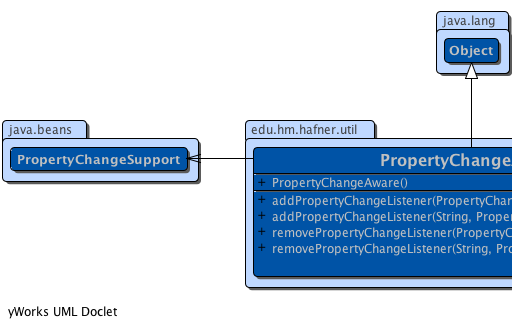
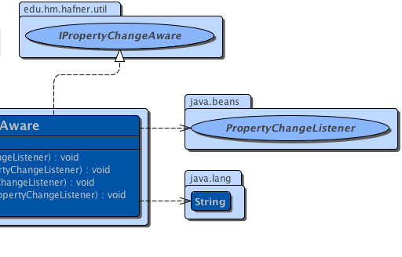

edu.hm.hafner.util.PropertyChangeAware
edu.hm.hafner.util.PropertyChangeAware
|
|||||||||
| PREV CLASS NEXT CLASS | FRAMES NO FRAMES | ||||||||
| SUMMARY: NESTED | FIELD | CONSTR | METHOD | DETAIL: FIELD | CONSTR | METHOD | ||||||||
java.lang.Object
public class PropertyChangeAware
Utility class that can be used as base class for beans that support bound properties. You can derive from this class and re-use the listener and notification functionality.
|  |  |
| Constructor Summary | |
|---|---|
PropertyChangeAware()
|
|
| Method Summary | |
|---|---|
void |
addPropertyChangeListener(java.beans.PropertyChangeListener listener)
Adds a PropertyChangeListener to the listener list. |
void |
addPropertyChangeListener(java.lang.String propertyName,
java.beans.PropertyChangeListener listener)
Adds a PropertyChangeListener for a specific property. |
void |
removePropertyChangeListener(java.beans.PropertyChangeListener listener)
Removes a PropertyChangeListener from the listener list. |
void |
removePropertyChangeListener(java.lang.String propertyName,
java.beans.PropertyChangeListener listener)
Removes a PropertyChangeListener for a specific property. |
| Methods inherited from class java.lang.Object |
|---|
equals, getClass, hashCode, notify, notifyAll, toString, wait, wait, wait |
| Constructor Detail |
|---|
public PropertyChangeAware()
| Method Detail |
|---|
public void addPropertyChangeListener(java.beans.PropertyChangeListener listener)
IPropertyChangeAwarePropertyChangeListener to the listener list. The listener
is registered for all properties. The same listener object may be added
more than once, and will be called as many times as it is added.
addPropertyChangeListener in interface IPropertyChangeAwarelistener - the PropertyChangeListener to be added
public void addPropertyChangeListener(java.lang.String propertyName,
java.beans.PropertyChangeListener listener)
IPropertyChangeAwarePropertyChangeListener for a specific property. The
listener will be invoked only when a call on raisePropertyChange names
that specific property. The same listener object may be added more than
once. For each property, the listener will be invoked the number of times
it was added for that property.
addPropertyChangeListener in interface IPropertyChangeAwarepropertyName - the name of the property to listen on.listener - the PropertyChangeListener to be addedpublic void removePropertyChangeListener(java.beans.PropertyChangeListener listener)
IPropertyChangeAwarePropertyChangeListener from the listener list. This
removes a PropertyChangeListener that was registered for all properties.
If listener was added more than once to the same event
source, it will be notified one less time after being removed. If
listener was never added, no exception is thrown and no
action is taken.
removePropertyChangeListener in interface IPropertyChangeAwarelistener - the PropertyChangeListener to be removed
public void removePropertyChangeListener(java.lang.String propertyName,
java.beans.PropertyChangeListener listener)
IPropertyChangeAwarePropertyChangeListener for a specific property. If
listener was added more than once to the same event source
for the specified property, it will be notified one less time after being
removed. If listener was never added for the specified
property, no exception is thrown and no action is taken.
removePropertyChangeListener in interface IPropertyChangeAwarepropertyName - the name of the property that was listened on.listener - the PropertyChangeListener to be removed
|
|||||||||
| PREV CLASS NEXT CLASS | FRAMES NO FRAMES | ||||||||
| SUMMARY: NESTED | FIELD | CONSTR | METHOD | DETAIL: FIELD | CONSTR | METHOD | ||||||||